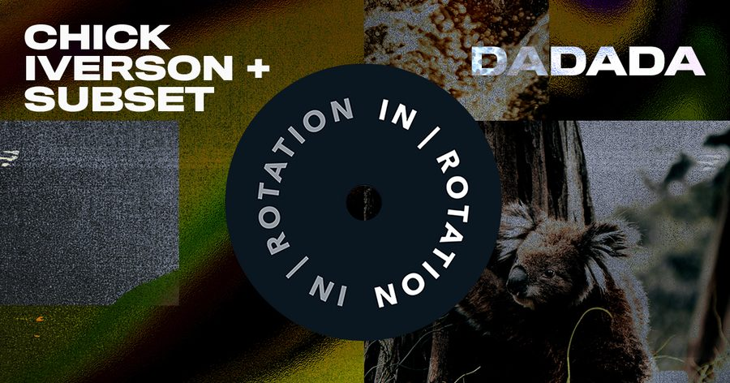

Chick Iverson and Subset Join Forces on Bombastic ‘Dadada’ EP for IN / ROTATION


Seattle scene favorites Chick Iverson and Subset both have somewhat different musical backgrounds. Yet after multiple encounters in their home base city, they’ve inevitably combined their powers for the rather large, groovy sounds of their new four-track Dadada EP on IN / ROTATION, which includes three rolling tech house originals, plus a Lucati remix.
While Chick Iverson blends his classical training with his natural talent for crafting booty-infused basslines, Subset has spent the past decade ingratiating himself with some of the most important crews in Stateside dance music. Whether it’s HARD, Holy Ship!, EDC Las Vegas, or Burning Man, Subset has been a regular presence at them all.
They’ve pooled these respective talents for their new Dadada EP on IN / ROTATION, so we thought we’d grab them both for a chat on how the release came together.
Chick Iverson and Subset’s Dadada EP is available here.
It’s cool to see you both coming together on this release. How are both of you doing at the moment?
Chick Iverson: I’m doing great! Aside from making house music, I teach private music lessons in Seattle and am in the process of filling up my lesson schedule. The New Year tends to bring a new wave of kids wanting to learn music, so it’s always a great time for my teaching business!
Subset: Never better! I just got off seven days of Holy Ship!, and I’m leaving for Jam Cruise tomorrow. We just debuted my new project Subset & the Instigators, hosting activities and instigating silliness all over Holy Ship. It went better than I ever expected. The last few months have been prep for these two weeks, and it’s been a blast so far.
What have you both got planned for 2019?
C: Nose to the grindstone, pretty much. I’m in the process of saving all the money to buy a fully upgraded/professional-quality studio and working as much as I can in the process. 45+ hour work weeks, maintaining a reasonable production schedule and managing my DJ calendar is proving to be a huge workload, but the work is all very fulfilling.
S: It’s going to be a wild year! My party Noise Complaint will be throwing some large-scale, unique events this year. My other party, Field Trip, has already lined up a ridiculous first quarter, and Q Nightclub (where I’m the Creative Director) will be bringing some absolute legends through this year. I’m incredibly grateful that I get so many opportunities to curate events. It’s an art, just as much as anything, and so important in building communities.
You’ve combined powers for your new IN / ROTATION release. What brought you guys together, and what’s the story behind the tracks featured on this release?
C: Mark is a force to be reckoned with in Seattle. I had been going to his events for a while and eventually met him at a rooftop party where he was hosting Wood Holly. He closed the party out on the decks and played one of my original tracks called “Let’s Go to a Party,” so I knew he dug my tunes. A short while later, he reached out to me about a potential collab, and now we’ve got three finished tunes together!
S: I was low-key obsessed with Nick’s tunes. There are so many talented producers in Seattle, and Nick’s music immediately stood out to me. When we met, we vibed pretty quickly… and I knew he was someone I’d love to work with. He came over to my studio—well, my bedroom—and we had a blast while working on what would become Dadada.
How do the respective Chick Iverson and Subset sounds merge together in this EP? Is it a case of an equal sonic mix, or does it create something entirely new?
C: For both of the collabs on this upcoming EP, the creation process was pretty much the same: I came over to Mark’s house and started working on a beat from scratch with him. When it came time to add vocals to the tracks, I hit record and said the first thing that came to mind. At Mark’s suggestion, we ended up using the first recorded takes/ideas and created the tracks around those ideas. Usually, I’ll do a lot of takes/ideas for vocal moments, so it was pretty refreshing to see him laughing about the recorded vocals and insisting that we use them!
S: While there are noticeable elements from our styles, the sound we have here is unique to our collabs. Nick’s sound design and groove work beautifully with my silliness and ADD.
What’s up next for you guys?
C: We’ve got a second EP already signed and awaiting release with Box of Cats! We’ll be announcing more details for that very soon.
S: Jam Cruise tomorrow, a bunch of killer home shows in Seattle, then Bamboo Bass and SF in February.
Follow Chick Iverson on Facebook | SoundCloud
Follow Subset on Facebook | Twitter | SoundCloud
Follow IN / ROTATION on Facebook | Twitter | SoundCloud